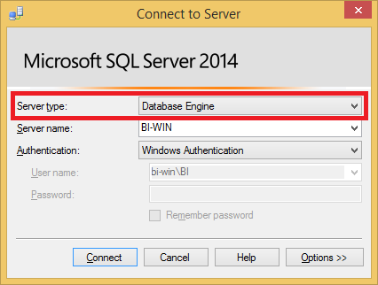

Using MSSQL BI tools¶
This guide provides a quick introduction using Microsoft SQL Server Business Intelligence tools.
SQL Server Management Studio¶
If you need to create a new database, or create the tables, use SQL Server Management Studio. You need to connect to a Database engine and use the server name and authentication method detailed in the course material.

After a successful connection, the databases are listed in the Object Explorer. Right-click the Databases folder to create a new database. To run a new query, click the New query button, write the query, and click Execute.

Typical issues¶
I just created a new database/table, but it does not appear in SSMS
Refresh the list by right-clicking the Databases or Tables folder in the Object explorer.
Microsoft SQL Server Data Tools integrated into Visual Studio¶
After installing Microsoft SQL Server Data Tools, you will find new visual Studio project types in the New Project wizard.

The projects themselves contain mostly xml-based descriptions. For production use, these so-called packages are published to servers for execution. For debugging purposes, Visual Studio is also able to execute the packages.
Integration Services project¶
The Integration services project contains a Package.dtsx (visible in Solution Explorer), which, when opened, presents a designer UI. There are two views to this UI: the Control Flow and the Data Flow.

Control flow is the high-level component responsible for the execution of the entire process; Data flow contains part of the whole process, a single ETL flow. We build ETL processes by combining the two.
The ETL process is built from the available components by dragging them from the SSIS toolbox and connecting them. The SSIS toolbox can be opened from the View menu under Other Windows. Each component's settings can be edited in the Properties box on the right or by double clicking the boxes themselves.

Notable components (from the SSIS Toolbox) that you will need:
- Data Flow Task: data extract-transform-load sequence of steps
- Execute SQL Task: execute a command
- ADO NET/ Excel / ODBC/ Flat File / etc. Source/Destination: load or save data to/from
- Derive Column: transform a value or calculate a new value from existing data
- Conditional Split: split the data into two paths based on a condition
- Sort: sorting and duplicate filtering
We can debug the process using the Debug button in the toolbar. During the execution, we will get immediate feedback on the progress and the result. The detailed log can be viewed by clicking the Progress button or in the Output window.

If there are errors during execution, you will see the component with issues marked with a red circle. In most cases, the actual error you can find in the Output window.

Typical issues¶
The integration services project failed to execute
Check the log in the Progress view, and locate the first error.
You changed the properties of a connection manager and "nothing works"
You need to open the data input or output component by double-clicking it. It will update the changes made to the connection manager.
CSV import fails if you removed columns in the flat file source connection manager
Do not remove columns in the file source. You will just ignore the unnecessary columns later on.
"Truncation" related errors
You specified incorrect length in the flat file source connection details.
"... failed validation and returned validation status VS_NEEDSNEWMETADATA", "... has been out of synchronization with the database column", or similar errors
You probably changed a column length either in the flat file source or in the database, and the ETL process definition is not aware of this change. You need to find the component with this error (the name is in the error message), then right-click it and open the Advanced editor and click Refresh.
If doing this for a single component does not solve the problem, repeat the same action for all components, starting with the input source and following the data flow direction (this synchronizes the input of each component with the output of the previous one, hence the need to do this in order).
When running the IS process in Visual studio it complains about "file being used"
Close Visual Studio. Start the Task Manager, and kill the "IS Debug Host" processes. Re-open the solution in Visual Studio and try again.
Reporting Services project¶
The easiest way to start with a new project is to use the Reporting Server Project Wizard. It guides you through creating the project and then a new report. The report is presented in a WYSIWYG manner in a designer surface. You can add new elements from the Toolbox (open the toolbox from View menu under Other Windows). The layout and contents are edited here, while the Properties of each element is specified in the toolbox on the right. You can also Preview the report here.

Every report has a Data source, which is the connection to the database. You need to create this manually, or if you used the wizard to create the project, it might already exist.
A Data set specifies the query that will fetch the data the report displays. Typically you create one data set for each component (table, diagram, etc.) you add to the report. The result of this query can be bound to fields of the report, e.g., display it in one column of the table.
You can find these in the Report Data window (open it from the View menu).

A report project can contain multiple reports. You can add new ones using the Solution Explorer.

Typical issues¶
There was no endpoint listening at net.pipe
Close Visual Studio then start it as administrator.